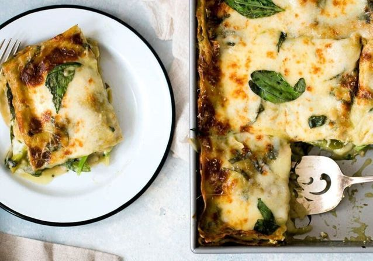

Home
Lasagna recipes

Lasagna is a traditional italian dish made of layers of pasta, flavorful meat sauce, cremy béchamel, and melted cheese.
Its a comforting meal; perfect for family dinners or gatherings with friends.
This recipe requires some time and patience, but the results is delicious:
rich flavours and a tender,melt-in-your-mouth texture that make lasagna a classic homemade favorite.
Ingredients:
- Lasagna noodles
- Ground meat(beef)
- Onion and garlic
- Tomato sauce
- béchamel sauce
- Grated cheese
- Salt and pepper
- Herbs (basil,oregano)
Steps:
- Preheat oven to 375°F (190°C).
- Cook lasagna noodles as directed; drain and set aside.
- Sauté onion and garlic in olive oil, add ground beef, cook until browned, then stir in marinara sauce.
- Mix ricotta with egg, salt, and half the Parmesan.
- In a baking dish, layer: sauce, noodles, ricotta mix, mozzarella—repeat layers 2 more times.
- Top with remaining mozzarella and Parmesan.
- Cover with foil and bake 25 minutes; uncover and bake 20 more until bubbly.
- Let rest 10 minutes before serving.